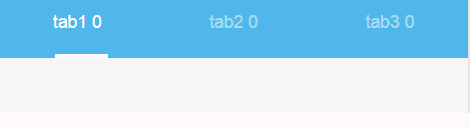

效果图

.wxml
<view class='tabBar'>
<view class='tabItem wx:if="{{tabClick===0?"click":""}}"' bindtap='clickTab' data-index='0'>tab1</view>
<view class='tabItem wx:if="{{tabClick===1?"click":""}}"' bindtap='clickTab' data-index='1'>tab2 </view>
<view class='tabItem wx:if="{{tabClick===2?"click":""}}"' bindtap='clickTab' data-index='2'>tab3 </view>
<view class='underline' animation="{{animationData}}" style='left:{{isLeft}}'></view>
</view>.wxss
.tabBar{
height: 80rpx;
background-color:#50B7EA;
width: 100%;
font-size: 28rpx;
color: rgba(255,255,255,0.50);
position: fixed;
top: 0;
left: 0;
display: flex;
justify-content: center;
align-items: center;
z-index: 997;
}
.tabItem{
width: 33.333%;
display: flex;
align-content: center;
justify-content: center;
position: relative;
height: 100%;
font-size: 28rpx;
}
.click{
color: white;
}
.underline{
position: absolute;
content: '';
width: 84rpx;
height: 3px;
background-color:white;
bottom: 0;
}
.js
data:{
tabClick: 0,
animationData: {},
isLeft: '12%'
},
swiperTab: function (e) {
var that = this;
var index = e.detail.current
console.log(e.detail.current)
var animation = wx.createAnimation({
duration: 1000,
timingFunction: "ease",
})
this.animation = animation
if (index === 0) {
animation.translate(0, 0).step();
that.setData({
animationData: animation.export()
})
that.setData({
tabClick: e.detail.current
});
} else if (index === 1) {
var w = wx.getSystemInfoSync().windowWidth;
w = w * 0.32
animation.translate(w, 0).step();
that.setData({
animationData: animation.export()
})
that.setData({
tabClick: e.detail.current
});
} else if(index === 2){
var w = wx.getSystemInfoSync().windowWidth;
w = w * 0.65
animation.translate(w, 0).step();
that.setData({
animationData: animation.export()
})
that.setData({
tabClick: e.detail.current
});
}
},